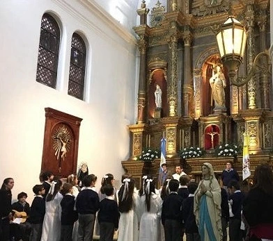
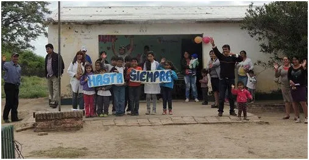

La propuesta de Pastoral del colegio San Miguel se apoya en los valores cristianos que son fruto del Evangelio y se sostiene en la vida de oración, para nutrir el camino en la fe, el amor fraterno y la vida en comunidad. Los tres niveles comienzan su jornada con un momento de oración diaria junto al saludo a la Patria.
A través de la educación pastoral los alumnos y alumnas se preparan para recibir La Palabra en segundo grado y celebrar el sacramento de la Reconciliación en tercer grado, seguido, en cuarto grado, por el sacramento de la Eucaristía, ofreciéndose también la posibilidad a de bautizar a los niños y niñas que no lo hayan hecho antes de iniciar la escolaridad. Siguiendo con el camino de la fe que se fortalece y madura en el cuarto año de secundaria, los alumnos y alumnas se disponen a recibir el sacramento de la Confirmación.
"Deseo que sea realidad que cada colegio de la Arquidiócesis, se hermane, con otras escuelas de las diócesis más necesitadas del país: para compartir, no hablo de padrinazgo, sino de hermandad. No somos los que damos y aquellos los que reciben. Nos damos mutuamente de lo nuestro y recibimos mutuamente de lo nuestro."
El colegio San Miguel lleva adelante el programa de "Escuelas Hermanas", acompañando escuelas en la localidad de Los Juríes, Santiago del Estero. Esta propuesta genera lazos, aúna esfuerzos, promueve intercambios comunitarios y es profundamente educativa. Todo el año y en todos los niveles se mantiene contacto con los directores, docentes, alumnos y familias de estas escuelas realizándose un viaje anual de intercambio y enriquecimiento mutuo.
